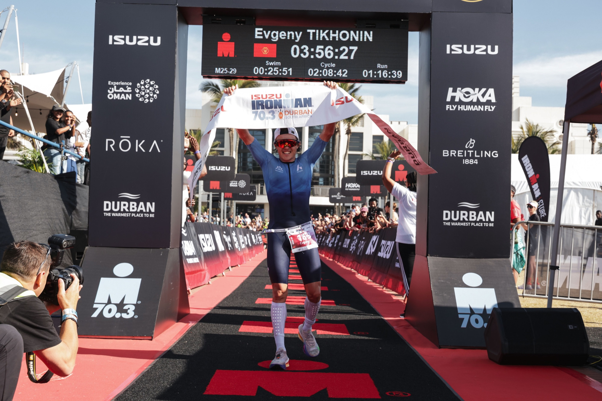
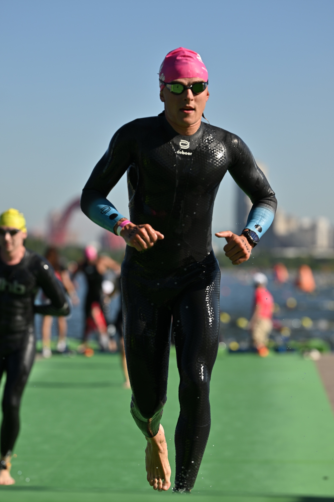
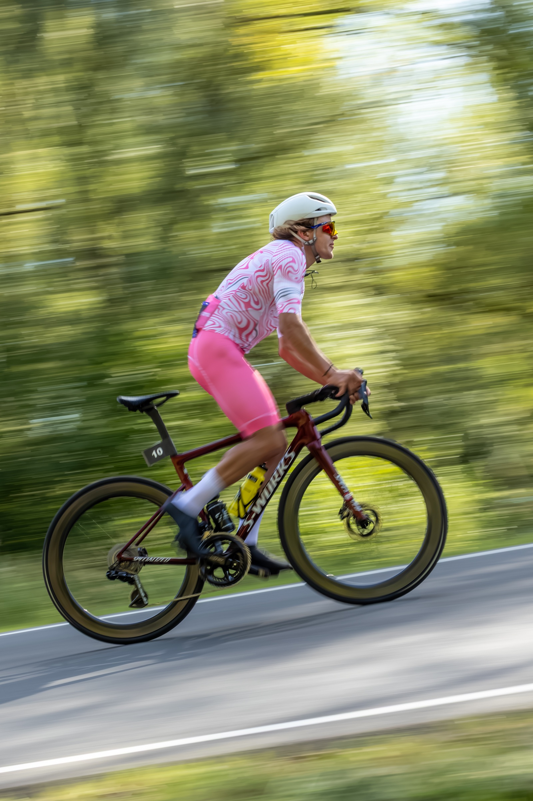

Hotline
Евгений Тихонин



Велоспорт
- Четырёхкратный чемпион России
- Участник Кубков мира
- Победитель и призёр международных соревнований на треке и шоссе
- Победитель общего зачёта трековой серии Cyclingrace четыре сезона подряд
Триатлон
- Абсолютный победитель Ironman 70.3 Oman 2025
- Абсолютный победитель Ironman 70.3 Durban 2026
- Победитель T100 Qatar 2025
- Бронзовый призёр чемпионата мира Ironman 70.3, 2025
- Семикратный победитель Ironstar